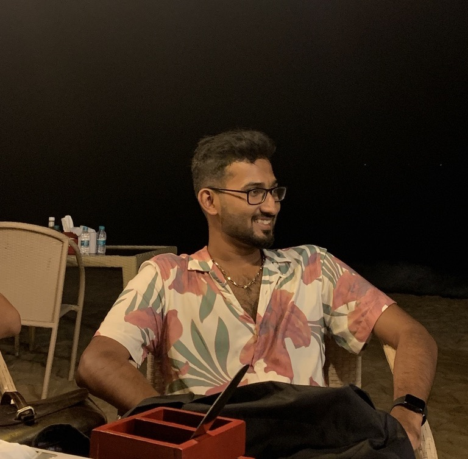

MS Information Science · The University of Texas at Austin
Hi, I'm Girish.
I build AI agents and the systems that keep them running.
I'm a graduate researcher at UT Austin's Swarm Lab, teaching AI to find answers inside long videos. Before that, I spent three years as a software engineer at Standard Chartered Bank, making its banking APIs faster, safer and cheaper to run.
Prefer the command line?

0software engineer in banking
0yearly costs cut at Standard Chartered
0at UT Austin
0projects to explore below